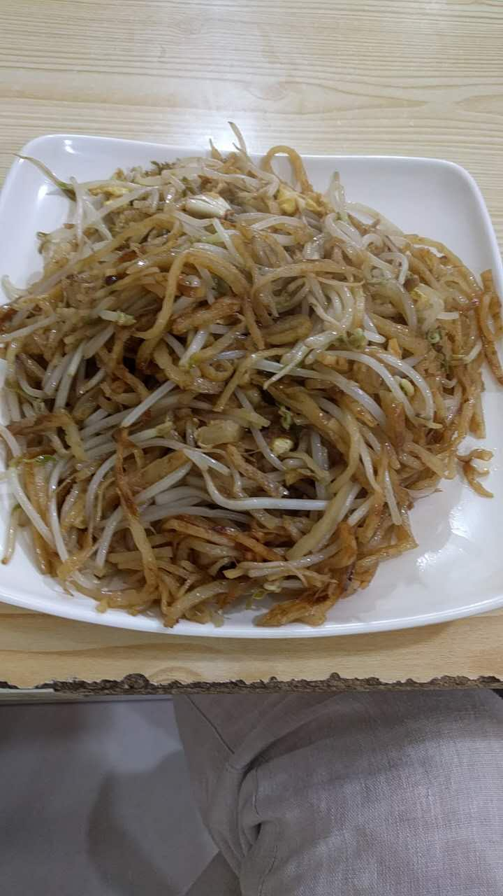
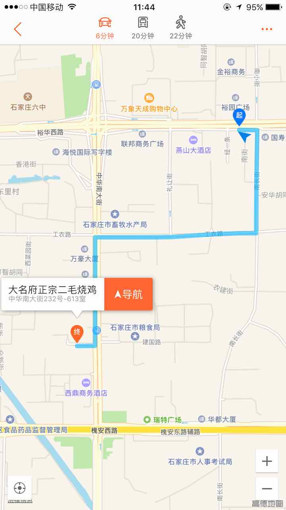
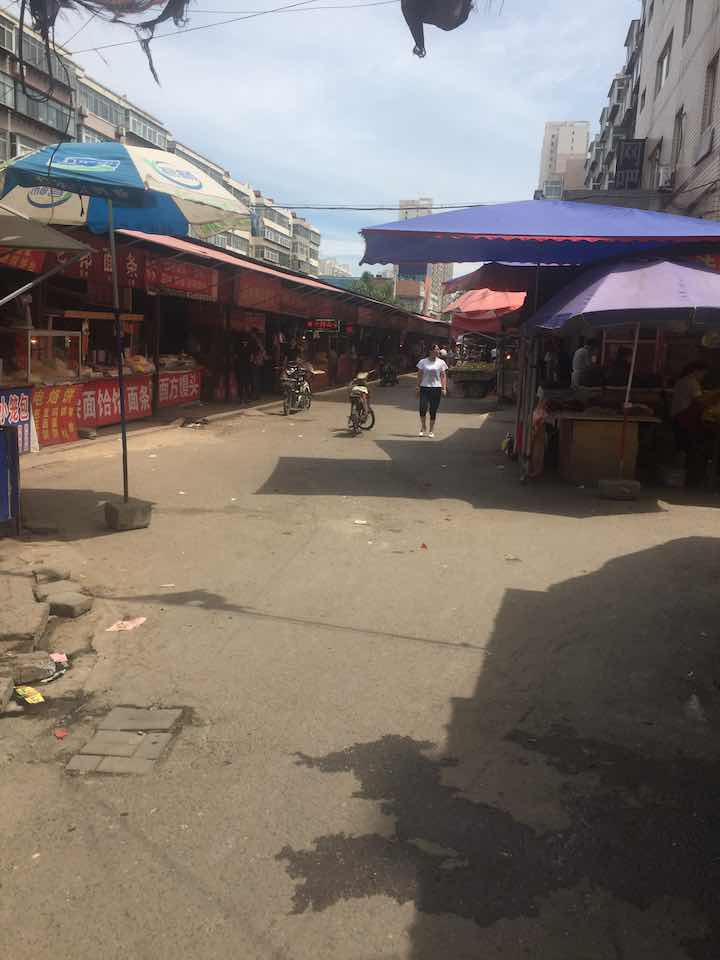
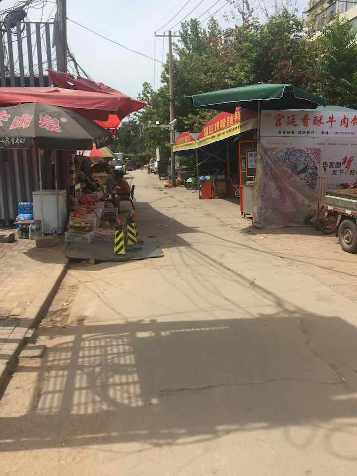
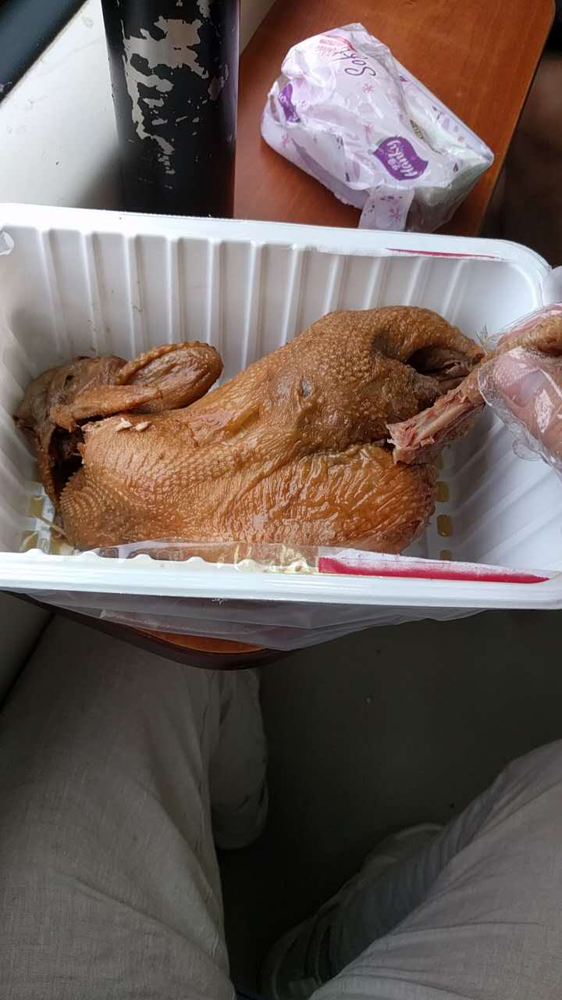
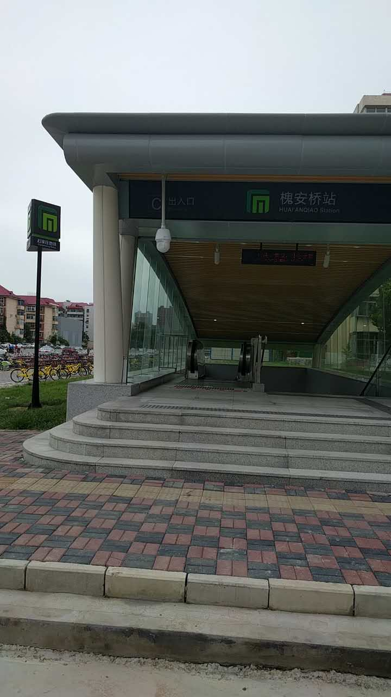
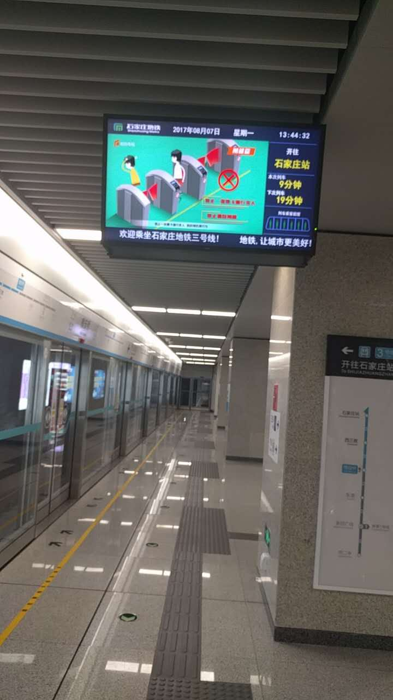

Table of Contents
1 2017-08-08 23:16 CST 1502205413 ATTACH
石家庄是一个很不错的城市，刚下火车，在去办事地方的路上发现空气比上次来好太多了，天空已经是可以看得见的蓝，还有白云，之前到处在施工的地铁已经建好，马路很干净。
周六去到办事的地方，虽然上班但是无法办理相应业务，只能等到周一再办。但是服务人员的还是很热情的帮我看了下材料是否齐全，得知我从外地过来还告诉我可以代办。等到周一的时候只用了20分钟就办完了所有手续，真心为我大石家庄公职部门办事效率和服务态度点赞！
石家庄人民的热情直爽随处都可以感受到，从的士司机师傅，到公职人员，从街边小贩到酒店保洁阿姨，你会发现这个城市人民的淳朴和热情，可以拿老北京对比，少了一些痞气，多了一些悠然，可以从他们身上感受到他们生活在这里安居乐业，怡然自得，没有大城市随处可见的焦虑和压抑。
回来的时候网上查了一下烧鸡店，想吃一下南方吃不到烧鸡，事实上这几天一直在吃炒饼，真是百吃不厌。找到一家大名正宗二毛烧鸡，沿路线而寻，却没找到。可能搬地方了吧，找的这家店是那种路边小店，并不是什么大饭店或连锁机构，对于这种传统的美食还是这种街边小店最正宗最地道。虽没找到烧鸡店，但却找到一个小巷子，从外面看去有点衰败景象，然而拐个弯就别有洞天了，特别像老家的菜市场，熟食，小饭馆，柴米油盐，水果，凉皮儿凉粉儿应有尽有，简单逛了下，很有感觉。
    哦，对了，最终买了几只金凤烧鸡，据说是石家庄特产，对我来说是北方的烧鸡就好。  再说一下石家庄的美女吧，可能没有一线城市美女那么时尚，但却看起来特别美，身材皮肤特别好，随处可见大长腿，又白又直。面部和南方妹纸有很明显的区别，就是典型的北方人的特征，这种美并不是石家庄所特有，北方大部分城市都这样吧，我想。事实上我一也一直以北方人的美为美，看着也更赏心悦目。
有一点变化可能并没有给这个城市加分，那就是随处可以见的洗脚按摩店，之前来的时候去过一次，至今记忆犹新，简直就是噩梦，技师技术就不说了，感觉个人卫生很差，看着都不想让她碰自己，从那之后就告别了洗脚按摩。这次来洗脚店似乎比以前更多了，但上次去的时候发现其实里面技师并不是北方人。
回来的时候体验了一下石家庄地铁，很新，无论是车站还是车厢味道特别大，会呛鼻子，坐地铁的人并不多，3号线10 分钟一趟，时间还挺久的，出了地铁路线指示牌也比较少，不太方便，看很多人出了地铁都不知道往哪边走，毕竟以前没有地铁，还是经验少了点。   下一次再来石家庄就不知道什么时候了。哦，对了，石家庄的火车站非常赞，通风透气，凉快，干净整洁，点个赞。